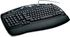
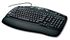

De: La Frikipedia, la enciclopedia extremadamente seria.
De: La Frikipedia, la enciclopedia extremadamente seria. De: La Frikipedia, la enciclopedia extremadamente seria.
| De la serie combinaciones de teclado para todos: | |||
| Ctrl+X | |||
| |||
| Teclas a usar | Ctrl y X | ||
| |
Eliminar cualquier archivo/texto/cosa previamente seleccionada | ||
| Creador | El mismo que creó a Supr | ||
| Año de invención | De la tana | ||
| Dificultad para usarlo | Dificil si eres manco. Facil si tienes las dos manos. Extremadamente fácil si eres Elzar | ||
| ¿Duele? | En algunas situaciones sí, y mucho. | ||
| Nivel de frikismo | Medio | ||
| Número de usos | 50% (El otro 50% se lo lleva Supr) | ||
«El veloz Murciélago hindú comía feliz cardillo y kiwi»
~ Pedazo de texto seleccionado antes de apretar Ctrl+X
«»
~ Pedazo de texto seleccionado después de apretar Ctrl+X
«GRFTXXX"$%%&/()(/&$ TT_TT»
~ Tú después de apretar Ctrl+X por error en mitad de un documento de Word
Combinación de teclado creada hace milenios por los ingenieros que también crearon a Supr. Esta combinación es destacada por poder cortar todo tipo de cosas si antes han sido seleccionadas.
Conocer y usar esta maravilla de la informática no es tan fácil. Primero debemos saber donde se encuentra.
Coje un teclado alfanumérico (no, no me vale el del movil so listo) de tipo Qwerty. Desliza tu mirada hasta la mujer del al lado tecla del logotipo de Windows y verás un pelín mas a la izquierda una tecla en la cual pone "Control" (no, no es para controlarte, ni para pedir condones). Teniendo vigilada la tecla "Control" (ha habido casos de gente que la pierde de vista una vez encontrada), la X debería estar arriba de "Alt". Y...¿Donde está "Alt"? Eso no nos incumbe, nosotros buscamos la X...
Bien, con las dos teclas arriba mencionadas bien vigiladas y en su sitio, se puede proceder de 3 maneras, según tengas 2 brazos, seas manco, o seas Elzar.
Si tienes 2 brazos enhorabuena, esta técnica te va a resultar fácil. Se procede de la siguiente manera:
Y no me refiero a tener poca habilidad, sino a tener un solo brazo, o una sola mano. Dáte con un canto en los dientes entonces, porque con esta técnica podrás pulsar esta bonita combinación.
No os olvideis de que si sois Elzar teneis 4 brazos, y por lo tanto teneis que usarlos todos a la vez para hacerlo bien.
Ctrl+X también tiene un funcionamiento interno bastante complejo que no podrás entender a no ser que seas ingeniero informático, o el barbudo. Este último caso se está dando bastantes veces por aquí, por lo que procederé a explicar el funcionamiento de tan apreciada combinación.
Todo empieza en el teclado. Cuando "Control" es apretado, libera una señal eléctrica hacia el desamplificador de neutrones de la CPU. La propia CPU es la encargada de fusionar esa señal con las instrucciones booleanas y emitir a la vez alguna que otra partícula de positrones y forlayos, que desincrustarán los calibradores de potencia que coordinan la placa base. Estos forlayos chocan con el desintegrador booleano, y desamperizan el desincrustador de calibradores potenciales, dando lugar a un gas que reacciona con la señal emitida por "Control". Después de todo esto, la CPU está preparada para recibir las órdenes desestresantes del nucleo de elementos, para desamperizar el desamperizador y preparar el regimiento booleano de coordenadas forlayantes. Una vez esas órdenes desestresantes llegan a la placa base, ésta emite una señal ionico-radioactiva que se fusiona con el amperizador y forma lo que técnicamente se llama "S.E.F" (Señal Eónica Forlayante) . Esta señal eónica se fusiona con la señal producida por un eón del Final Fantasy X, permitiendote pulsar solo, y SOLO en ese momento la letra X del teclado para ejecutar la combinacion. Vamos, que el funcionamiento es muy facil. En caso de que tan solo pulses "Control", el sistema tiene un método para evitar esas falsas alarmas para no sobrecargar la placa base de órdenes de Forlayo. El desamperizador desamperiza el regimiento booleano para dejar paso libre al gas forlayante que se ha creado. El gas pasa a través de unos conductos trocolianos creados virtualmente por la CPU y el gas finalmente sale por la rejilla de ventilación (por eso está tan calentita). El calibrador potencial elimina la sub-variable alfa de amperizacion coordinante y el desamperizador se desamperiza una vez más, revirtiendo los cambios y dando lugar a una situacion de total normalidad en el sistema.
En el año 2008 y con la venta de Microsoft Office 09, se incluyo una nueva combinación de teclas. Al seleccionar un sector de un texto, y apretar Shift + Z, el texto se copiaba, pero si se apretaba z + Shift el texto era cortado. Mucho más practico.
|  Combinaciones del teclado  |
|---|
| Alt+F4 | Any Key | Asdasd | ASDF | Bloq Despl | Ctrl+Alt+Supr | Ctrl+C Ctrl+V | Intro Ctrl+X | Ctrl+Z | Qwerty | Qweqwe | Teclado |
Autor(es):